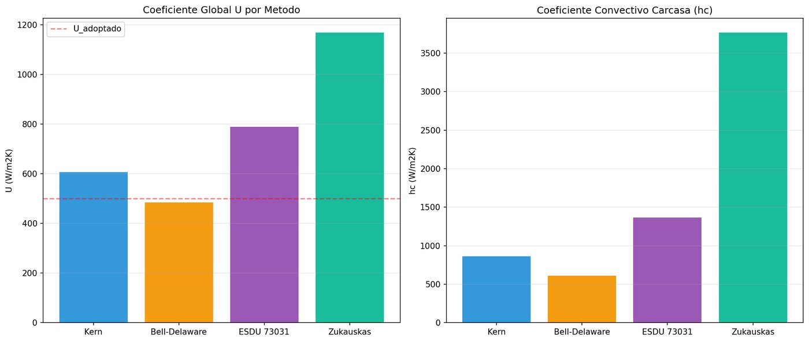
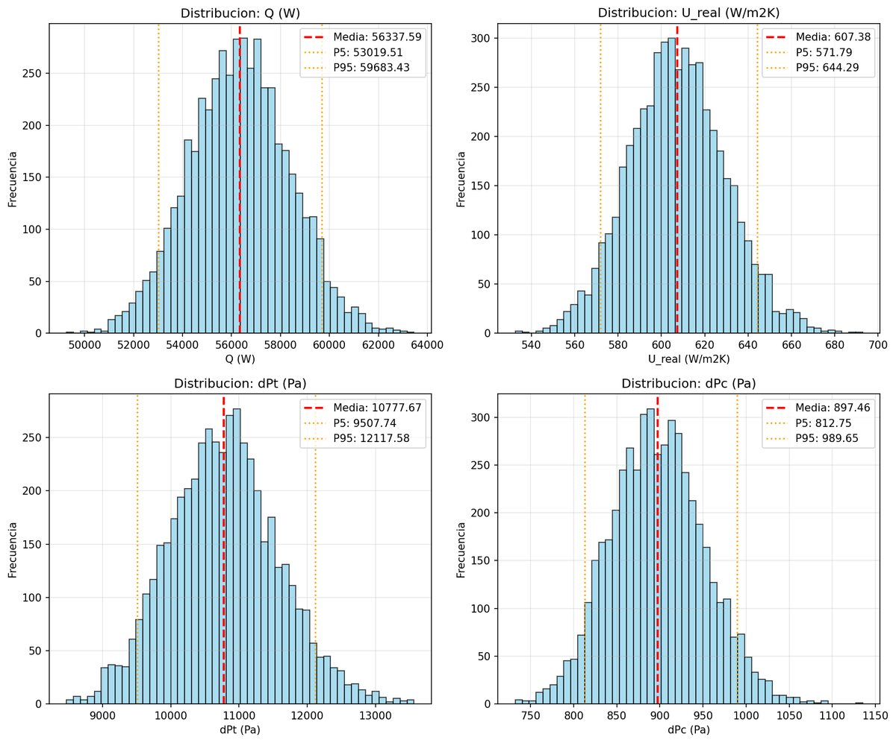

Diseño térmico
Rehace la memoria completa: calor, DMLT, coeficiente global, caídas de presión y verificaciones TEMA.
 Nicolas Sgandurra
Nicolas Sgandurra
Ingeniería mecánica y térmica
La memoria de cálculo de un intercambiador, convertida en herramientas para probar escenarios.
El punto de partida fue la memoria de cálculo de un intercambiador TEMA BEM de 48 tubos y 4 pasos que enfría metanol con agua. La pasé a Python con la biblioteca ht y la extendí en ocho simuladores independientes. Cada uno responde una pregunta distinta sobre el mismo equipo.
La memoria de cálculo de un intercambiador se hace una vez y con valores fijos. Cambiar un caudal o la geometría obliga a rehacerla entera.
Rehace la memoria completa: calor, DMLT, coeficiente global, caídas de presión y verificaciones TEMA.
Cambia temperaturas, caudales o geometría y recalcula al momento.
Recorre 3.600 configuraciones y ordena las mejores según un puntaje.
Compara Kern, Bell-Delaware, ESDU 73031 y Zukauskas.
Densidad, calor específico, conductividad y viscosidad en función de la temperatura.
Mueve un parámetro por vez y mide cuánto cambian el calor, el coeficiente global, la caída de presión y la superficie.
Costo del equipo, instalación, operación y mantenimiento, con VAN y repago.
Propaga la incertidumbre de propiedades y geometría para ver qué tan confiable es el diseño.

Para la misma carcasa, el coeficiente global va de menos de 500 W/m²K con Bell-Delaware a casi 1.200 con Zukauskas. La línea punteada es el valor adoptado en la memoria.

Distribución del calor, el coeficiente global y las caídas de presión cuando varían las propiedades y la geometría.
Reproducir la memoria original y comparar cada resultado con el de la hoja de cálculo.
Un simulador por pregunta: qué pasa si cambia un dato, cuál es la mejor geometría, cuánto cuesta y qué tan seguro es el diseño.
Un script corre todos los simuladores y arma un reporte consolidado, con gráficos y exportación a Excel.
| Calor intercambiado | 56,3 kW |
|---|---|
| Coeficiente global calculado | 607 W/m²K |
| Margen sobre el adoptado (500 W/m²K) | 21 % |
| Caída de presión en tubos | 10,75 kPa (límite 20 kPa) |
| Caída de presión en carcasa | 0,90 kPa (límite 20 kPa) |
El código es privado. Si querés ver los simuladores o los resultados completos, escribime.